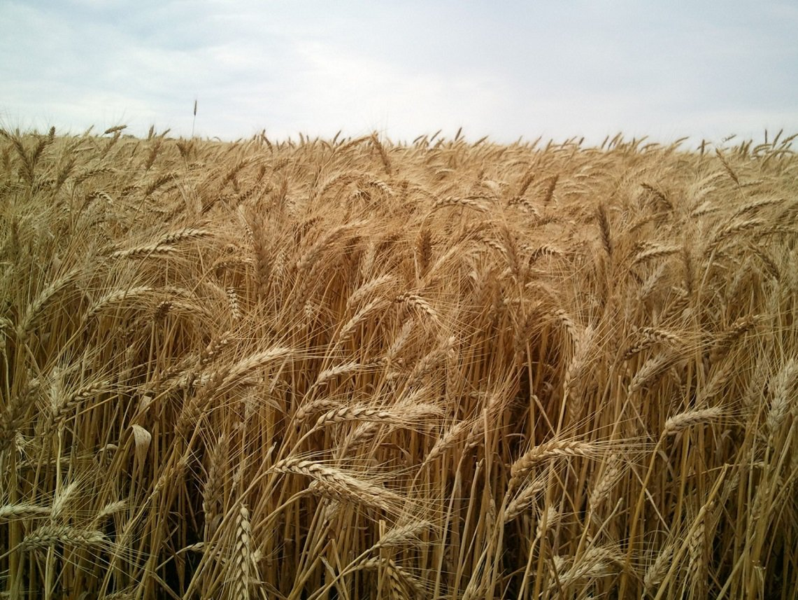

Taste and style is beyond clothes. It’s in food; it’s in quality. Working out, healthy bodies, organic food-they’re all part of the same thing.

Organic Wheat
Our organic milling wheat is an important ingredient for organic bakery products. We supply numerous varieties of milling wheat, covering a range of protein levels and falling numbers for varying applications, from bread to biscuits. Our global sourcing team has set up several projects to source organic wheat in Eastern Europe. We actively help our farmers with training and provide information on procedures such as organic production practices, financing and logistics. As well as our existing organic sources, we work with conventional farmers to help them convert to organic farming. This way we continue to add new sources of organic wheat to our network.

Organic Rice
Grainer supplies a broad selection of alternative organic grains that can be used as a replacement or supplement for our organic wheat. Our organic rye, which is sourced mainly from North America, has superior falling numbers and is excellent for different baking applications. Our organic malting barley, which is sourced directly from farmers in Eastern Europe and Australia, is an ideal ingredient for the increasing number of micro brewers worldwide. In addition to these products, we offer a variety of ancient grains, such as spelt, oats, Khorasan and more. Once forgotten, these organic ancient grains are in increasing demand by consumers. Our extensive range of organic grains also includes numerous gluten-free options.